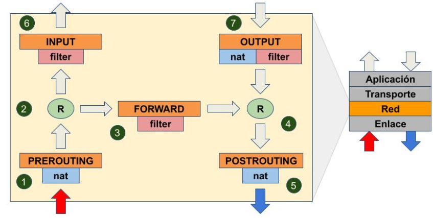

ACTIVIDAD 03 — Interpretación y traducción de políticas en iptables
Se documenta el flujo básico del paquete, propósito de tablas (FILTER/NAT/MANGLE/RAW/SECURITY), anatomía de comandos y reglas de control (HTTP/SSH/ESTABLISHED/LOG).
1) Introducción 2) Desarrollo técnico 3) Multimedia 4) Reflexión 5) Referencias1) Introducción contextual al tema
En Linux, iptables (Netfilter) funciona como un firewall por reglas que decide qué tráfico entra, sale o atraviesa el sistema. Comprender la diferencia entre tablas, cadenas y acciones permite traducir políticas de seguridad a reglas concretas: permitir servicios necesarios (HTTP/SSH), restringir por IP de origen y aceptar solo tráfico relacionado/establecido.
Esta actividad se enfoca en interpretar el flujo de procesamiento de un paquete, relacionar tablas con su propósito, y escribir reglas típicas que se usan en servidores.
2) Desarrollo técnico de la actividad
2.1 Flujo del paquete (concepto base)
Cuando un paquete llega al sistema, primero pasa por una tabla, después por una cadena y finalmente se ejecuta una acción (target).
2.2 Tablas de iptables y propósito principal
Relación “tabla → propósito” (y un ejemplo corto de uso), tal como se trabajó en la hoja.
| Tabla | Propósito principal | Ejemplo de uso (frase corta) |
|---|---|---|
| FILTER | Filtra paquetes (permitir/denegar tráfico). | “Pasa/filtra paquetes” (permitir HTTP/SSH). |
| NAT | Traduce direcciones (NAT, enmascaramiento, redirección). | Conexión de diferentes dispositivos / compartir salida a Internet. |
| MANGLE | Marcar/modificar cabeceras (QoS, flags, marcas). | Poner marcas a los encabezados. |
| RAW | Tráfico “antes” de seguimiento de conexión (conntrack). | Dejar pasar paquetes sin seguimiento (NOTRACK). |
| SECURITY | Seguridad adicional (políticas tipo SELinux/LSM). | Auditoría/seguridad de paquetes (contextos). |
2.3 Anatomía de un comando iptables
Estructura del comando (partes clave).
iptables -A <CADENA> -p tcp -m <MATCH> --dports 80,443 -j <ACCIÓN>
A = Append (agregar regla)
CADENA = INPUT / OUTPUT / FORWARD
-p tcp = protocolo
-m match = módulo de comparación (ej. multiport, state)
--dports = puertos destino (lista)
-j = jump (acción/target): ACCEPT | DROP | REJECT | LOG2.4 Opciones y variables comunes
Ejemplos típicos que se usan para “leer” y “traducir” reglas.
a) Limitar intentos por minuto:
--limit 5/minute
b) Filtrar por IP de origen:
-s 192.168.1.0/24 (o --source 192.168.1.0/24)
c) Ver solo números (sin DNS, sin resolución de puertos):
iptables -L -n
d) Ver reglas con contadores (paquetes y bytes):
iptables -L -v2.5 ¿Qué hace esta regla? (interpretación)
iptables -A INPUT -i eth0 -p tcp -m multiport --dports 22,80,443 \
-m state --state NEW,ESTABLISHED -j ACCEPT- INPUT: afecta tráfico entrante al host.
- -i eth0: aplica solo a la interfaz eth0.
- -p tcp: solo TCP.
- --dports 22,80,443: permite SSH (22) y web (HTTP/HTTPS: 80/443).
- --state NEW,ESTABLISHED: permite conexiones nuevas y ya establecidas.
- -j ACCEPT: acción final: aceptar.
Interpretación resumida: permite tráfico entrante para servicios SSH y Web (22/80/443) por eth0.
2.6 Traducción de políticas a reglas (ejercicios)
7) Permitir tráfico HTTP entrante
iptables -A INPUT -p tcp --dport 80 -j ACCEPT
8) Permitir todo el tráfico saliente
iptables -P OUTPUT ACCEPT
9) Permitir SSH solo desde la IP 192.168.1.50
iptables -A INPUT -p tcp -s 192.168.1.50 --dport 22 -j ACCEPT
10) Permitir TCP entrante a puertos 80 y 443 solo si es conexión establecida o relacionada
iptables -A INPUT -p tcp -m multiport --dports 80,443 -m state --state ESTABLISHED,RELATED -j ACCEPT
11) Permitir TCP entrante por eth0 a 22,80,443; registrar intentos y permitir solo NEW y ESTABLISHED
iptables -A INPUT -i eth0 -p tcp -m multiport --dports 22,80,443 -j LOG --log-prefix "ACCESO DETECTADO TCP: "
iptables -A INPUT -i eth0 -p tcp -m multiport --dports 22,80,443 \
-m state --state NEW,ESTABLISHED -j ACCEPTNota: separar LOG y ACCEPT ayuda a auditoría y detección de actividad sospechosa.
3) Material multimedia

4) Opinión o reflexión técnica del estudiante
Lo más importante de iptables no es memorizar comandos, sino entender la “lógica”: tabla → cadena → regla → acción. Cuando se domina eso, se vuelve más fácil traducir una política (“solo SSH desde una IP”, “web solo si la sesión ya está establecida”) a reglas concretas.
En escenarios reales de seguridad, este tipo de filtrado reduce superficie de ataque: limitar por IP de origen, permitir únicamente puertos necesarios y registrar intentos (LOG) ayuda a detectar escaneo de puertos y accesos anómalos. En un servidor expuesto, una regla mal escrita puede abrir servicios innecesarios; por eso se recomienda documentar reglas, probar y auditar contadores.
5) Referencias técnicas
- netfilter/iptables. iptables(8) — Linux manual page (man iptables).
- Netfilter Project. Documentation / Packet filtering (iptables y conceptos de cadenas/tablas).
- conntrack / state module. Conceptos de estados: NEW, ESTABLISHED, RELATED.